Esta presentación está diseñada para verse en horizontal. Rotá tu dispositivo para continuar.
ICAP · Doctorado en Gestión Pública y Ciencias Empresariales
01 / 12
Instituto Centroamericano de Administración PúblicaPrograma de Doctorado en Gestión Pública y Ciencias Empresariales
Modelo de Gobernanza Inteligente en Turismo de Bienestar para el Destino Turístico de La Fortuna, Costa Rica 2030
Anteproyecto sometido a consideración del Tribunal Examinador del Programa de Doctorado en Gestión Pública y Ciencias Empresariales como requisito para optar por la aprobación del tema de investigación para el desarrollo de la Tesis Doctoral
DoctorandaLady Fernández Mora
Director de tesisPost-PhD. Jean-Paul Vargas Céspedes
Lector de Tesis 1Post-PhD. Erick Menjívar Escobar
Lector de Tesis 2PhD. Caryl Alonso
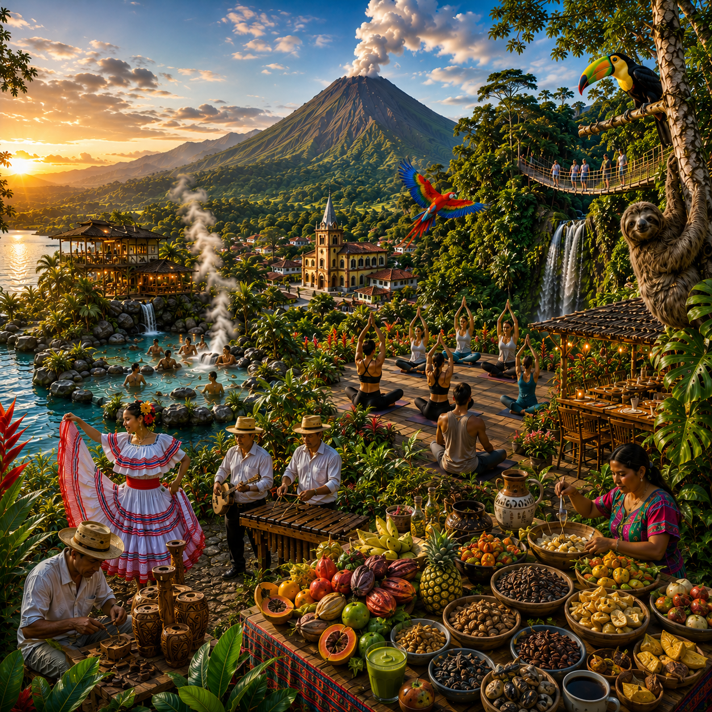
Julio 2026 · San José, Costa Rica
${icon-compass}02 · Agenda
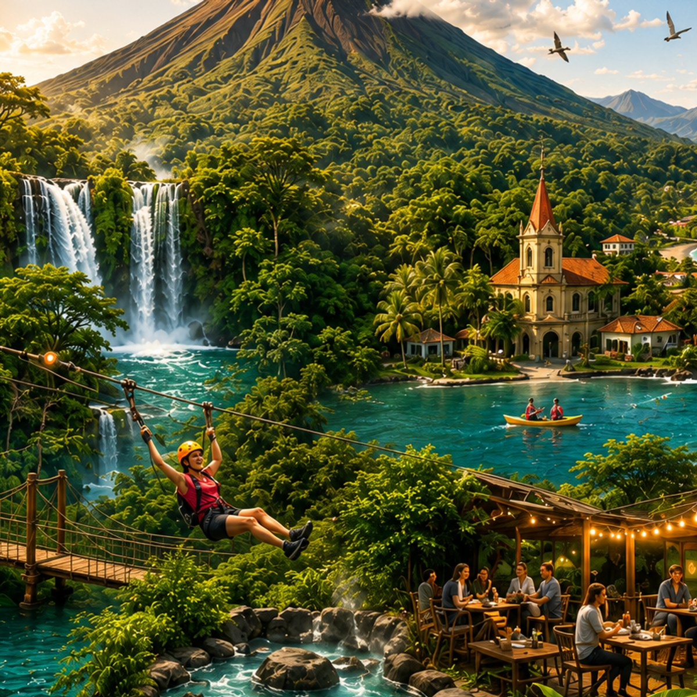
${icon-spark}03 · Motivación y contexto
${icon-alert}04 · Problema, brecha y justificación
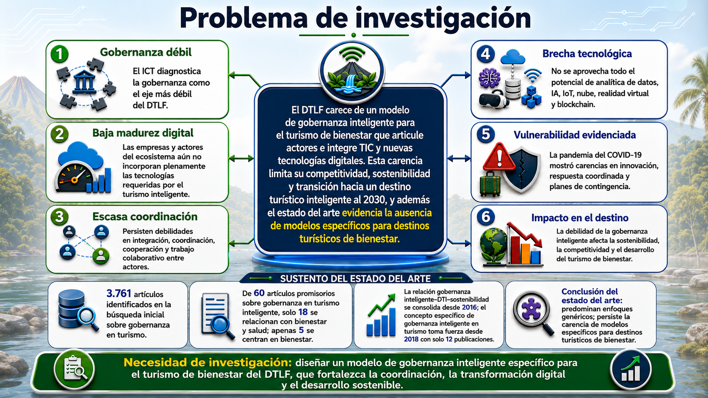
${icon-target}05 · Pregunta de investigación
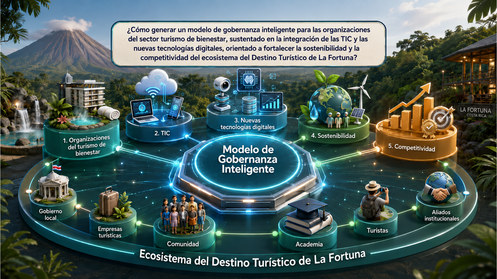
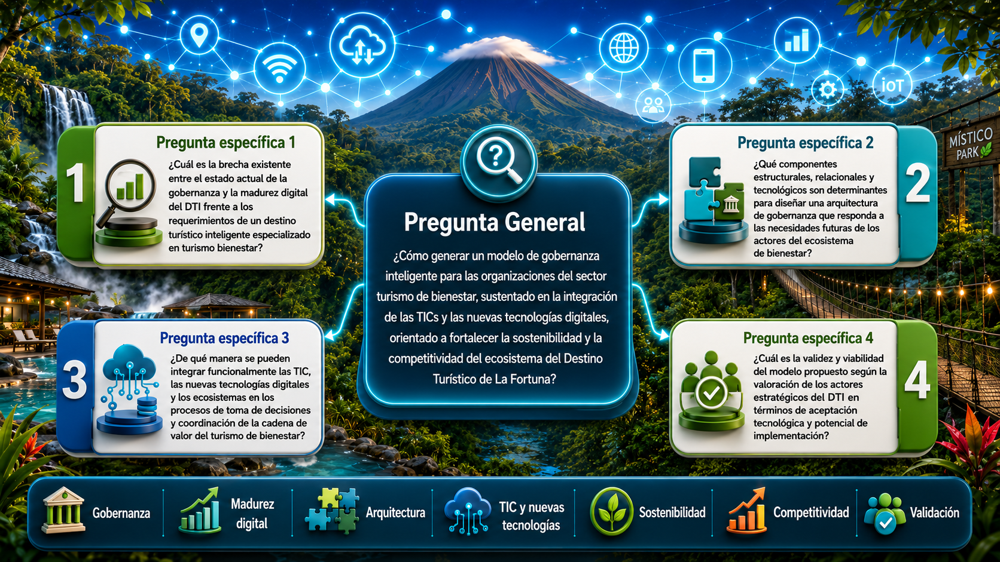
${icon-target}06 · Objetivo general
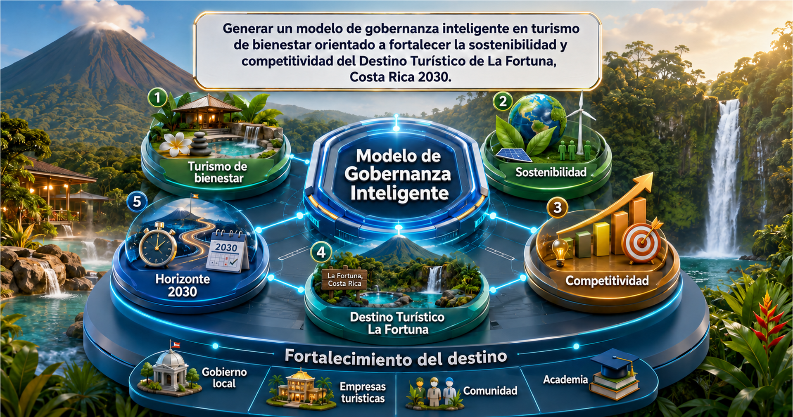
${icon-target}07 · Objetivos específicos
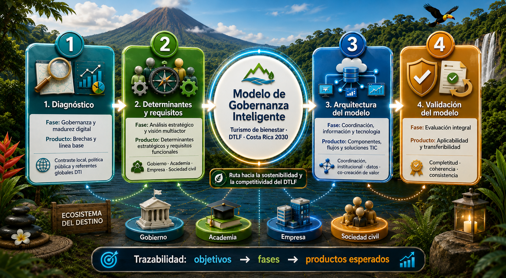
${icon-book}08 · Marco teórico
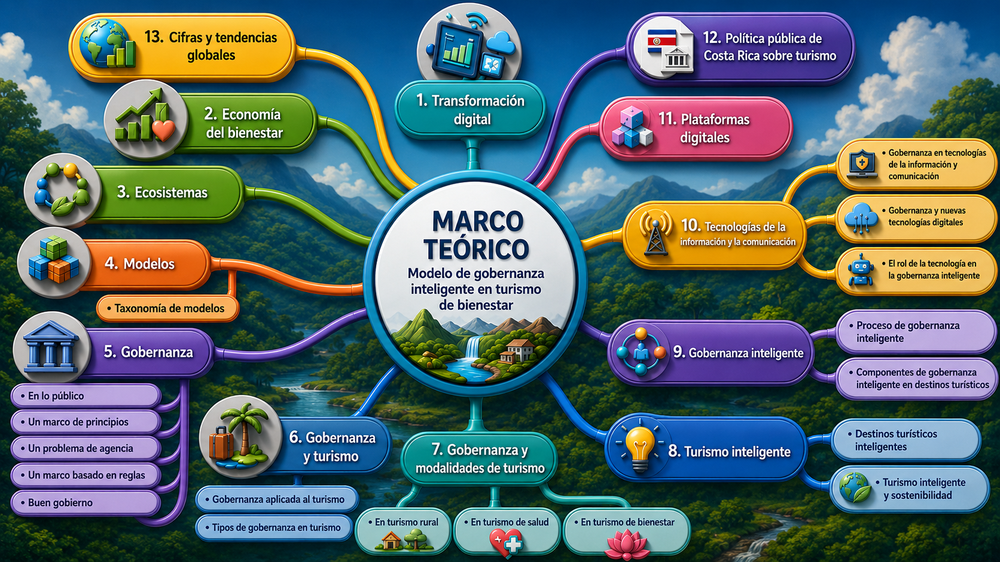
Tabla del marco teórico
Modelo de Gobernanza Inteligente en Turismo de Bienestar para el Destino Turístico de La Fortuna, Costa Rica 2030
Nota: la teoría explicativa definida para el anteproyecto es la gobernanza inteligente; las demás se emplean como teorías auxiliares.
${icon-network}09 · Marco Metodológico
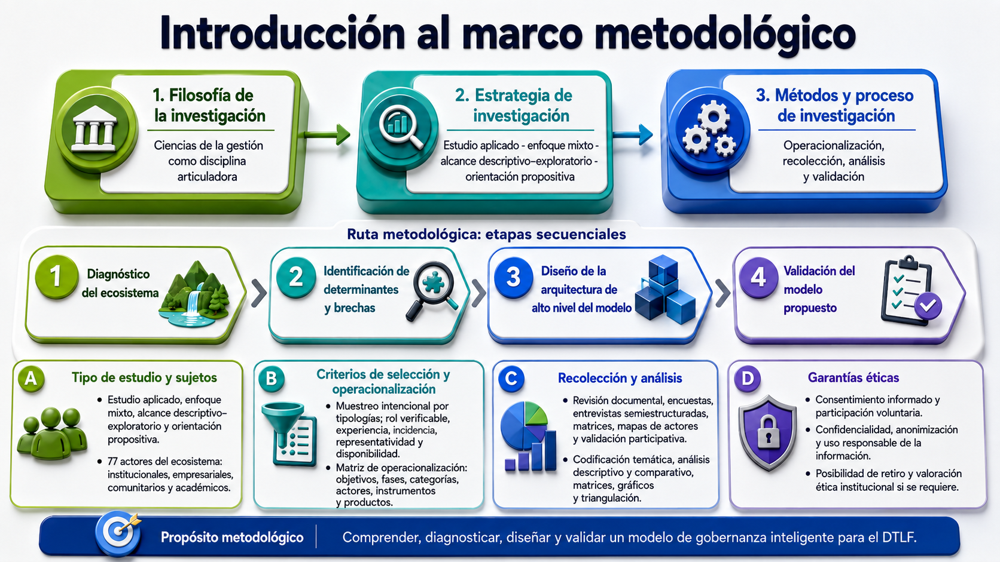
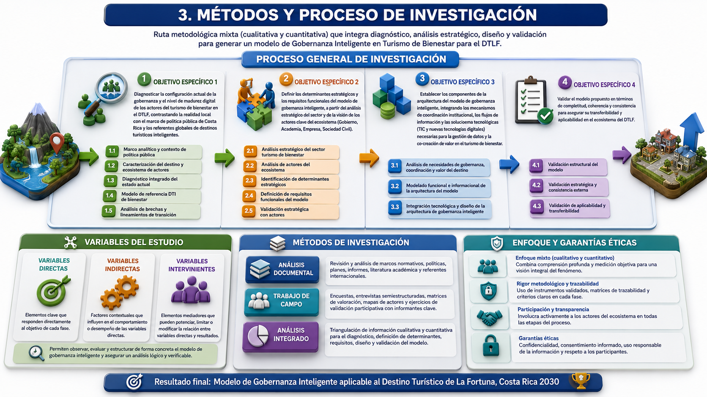
${icon-cog}10 · Plan Operativo
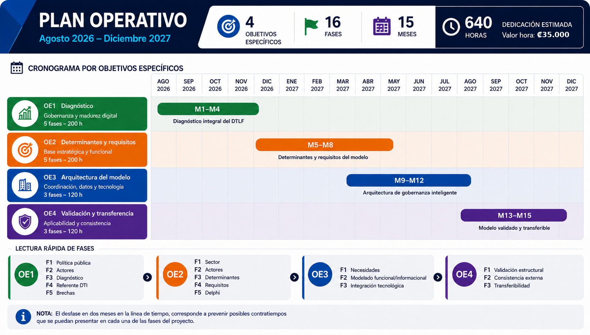
${icon-chart}11 · Resultados esperados
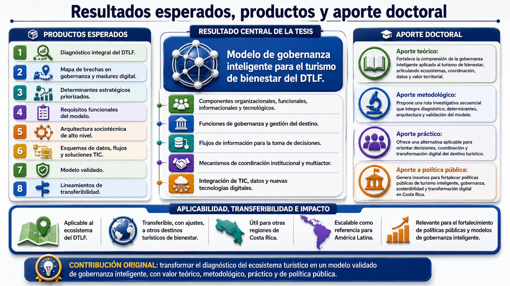
${icon-award}12 · Viabilidad y Limitaciones
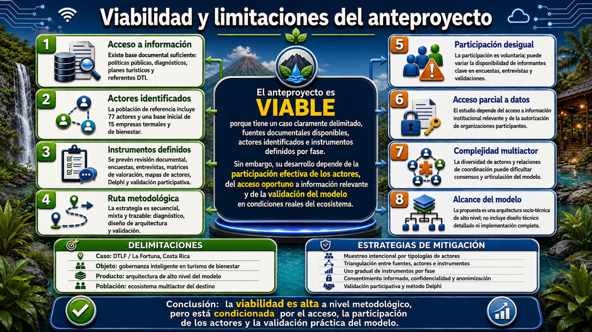
${icon-image}13 · Anexos
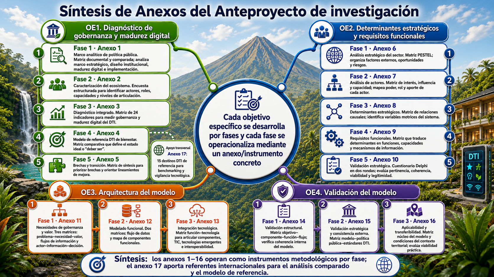
Modelo de Gobernanza Inteligente · La Fortuna 2030